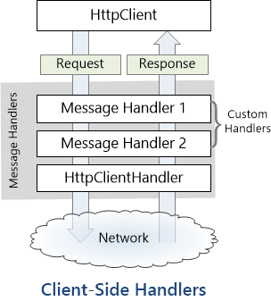

Fun with the HttpClient pipeline
A few years ago, Microsoft introduced the HttpClient class as a modern alternative to HttpWebRequest to make web requests from .NET apps. Not only is this new API much easier to use, cleaner, and asynchronous by design, it’s also easily extensible.
You might have noticed that HttpClient has a constructor that accepts a HttpMessageHandler. What is this handler? It’s an object that accepts a request (HttpRequestMessage) and returns a response (HttpResponseMessage); how it does that is entirely dependent on the implementation. By default, HttpClient uses HttpClientHandler, a handler which sends a request to a server over the network and returns the server’s response. The other built-in handler implementation is an abstract class named DelegatingHandler, and is the one I want to talk about.
The pipeline
DelegatingHandler is a handler that is designed to be chained with another handler, effectively forming a pipeline through which requests and responses will pass, as shown on this diagram:

(Image from the official ASP.NET website)
Each handler has a chance to examine and/or modify the request before passing it to the next handler in the chain, and to examine and/or modify the response it receives from the next handler. Typically, the last handler in the pipeline is the HttpClientHandler, which communicates directly with the network.
The handler chain can be setup like this:
var pipeline = new MyHandler1()
{
InnerHandler = new MyHandler2()
{
InnerHandler = new HttpClientHandler()
}
};
var client = new HttpClient(pipeline);
But if you prefer fluent interfaces, you can easily create an extension method to do it like this:
var pipeline = new HttpClientHandler()
.DecorateWith(new MyHandler2())
.DecorateWith(new MyHandler1());
var client = new HttpClient(pipeline);
All this might seem a little abstract at this point, but this pipeline architecture enables plenty of interesting scenarios. See, HTTP message handlers can be used to add custom behavior to how requests and responses are processed. I’ll give a few examples.
Side note: I’m presenting this feature from a client-side perspective (since I primarily make client apps), but the same HTTP message handlers are also used on the server-side in ASP.NET Web API.
Unit testing
The first use case that comes to mind, and the first I ever used, is unit testing. If you’re testing a class that makes online payments over HTTP, you don’t want it to actually send requests to the real server… you just want to ensure that the requests it sends are correct, and that it reacts correctly to specific responses. An easy solution to this problem is to create a “stub” handler, and inject it into your class to use instead of HttpClientHandler. Here’s a simple implementation:
class StubHandler : HttpMessageHandler
{
// Responses to return
private readonly Queue<HttpResponseMessage> _responses =
new Queue<System.Net.Http.HttpResponseMessage>();
// Requests that were sent via the handler
private readonly List<HttpRequestMessage> _requests =
new List<System.Net.Http.HttpRequestMessage>();
protected override Task<HttpResponseMessage> SendAsync(
HttpRequestMessage request,
CancellationToken cancellationToken)
{
if (_responses.Count == 0)
throw new InvalidOperationException("No response configured");
_requests.Add(request);
var response = _responses.Dequeue();
return Task.FromResult(response);
}
public void QueueResponse(HttpResponseMessage response) =>
_responses.Enqueue(response);
public IEnumerable<HttpRequestMessage> GetRequests() =>
_requests;
}
This class lets you record the requests that are sent via the handler and specify the responses that should be returned. For instance, you could write a test like this:
// Arrange
var handler = new StubHandler();
handler.EnqueueResponse(new HttpResponseMessage(HttpStatusCode.Unauthorized));
var processor = new PaymentProcessor(handler);
// Act
var paymentResult = await processor.ProcessPayment(new Payment());
// Assert
Assert.AreEqual(PaymentStatus.Failed, paymentResult.Status);
Of course, rather than creating a stub manually, you could use a mocking framework to generate a fake handler for you. The fact that the SendAsync method is protected makes it a little harder than it should be, but you can easily work around the issue by making a subclass that exposes a public virtual method, and mock that instead:
public abstract class MockableMessageHandler : HttpMessageHandler
{
protected override sealed Task<HttpResponseMessage> SendAsync(
HttpRequestMessage request,
CancellationToken cancellationToken)
{
return DoSendAsync(request);
}
public abstract Task<HttpResponseMessage> DoSendAsync(HttpRequestMessage request);
}
Usage example with FakeItEasy:
// Arrange
var handler = A.Fake<MockableMessageHandler>();
A.CallTo(() => handler.DoSendAsync(A<HttpRequestMessage>._))
.Returns(new HttpResponseMessage(HttpStatusCode.Unauthorized));
var processor = new PaymentProcessor(handler);
...
Logging
Logging sent requests and received responses can help diagnose issues. This can easily be done with a custom delegating handler:
public class LoggingHandler : DelegatingHandler
{
private readonly ILogger _logger;
public LoggingHandler(ILogger logger)
{
_logger = logger;
}
protected override async Task<HttpResponseMessage> SendAsync(
HttpRequestMessage request,
CancellationToken cancellationToken)
{
_logger.Trace($"Request: {request}");
try
{
// base.SendAsync calls the inner handler
var response = await base.SendAsync(request, cancellationToken);
_logger.Trace($"Response: {response}");
return response;
}
catch (Exception ex)
{
_logger.Error($"Failed to get response: {ex}");
throw;
}
}
}
Retrying failed requests
Another interesting use case for HTTP message handlers is to automatically retry failed requests. For instance, the server you’re talking to might be temporarily unavailable (503), or it could be throttling your requests (429), or maybe you lost Internet access. Handling the retry for these cases at the application level is a pain, because it can happen virtually in any part of your code. Having this logic at the lowest possible level and implemented in a way that is completely transparent to the callers can make things much easier.
Here’s a possible implementation of a retry handler:
public class RetryHandler : DelegatingHandler
{
protected override async Task<HttpResponseMessage> SendAsync(
HttpRequestMessage request,
CancellationToken cancellationToken)
{
while (true)
{
try
{
// base.SendAsync calls the inner handler
var response = await base.SendAsync(request, cancellationToken);
if (response.StatusCode == HttpStatusCode.ServiceUnavailable)
{
// 503 Service Unavailable
// Wait a bit and try again later
await Task.Delay(5000, cancellationToken);
continue;
}
if (response.StatusCode == (HttpStatusCode)429)
{
// 429 Too many requests
// Wait a bit and try again later
await Task.Delay(1000, cancellationToken);
continue;
}
// Not something we can retry, return the response as is
return response;
}
catch (Exception ex) when(IsNetworkError(ex))
{
// Network error
// Wait a bit and try again later
await Task.Delay(2000, cancellationToken);
continue;
}
}
}
private static bool IsNetworkError(Exception ex)
{
// Check if it's a network error
if (ex is SocketException)
return true;
if (ex.InnerException != null)
return IsNetworkError(ex.InnerException);
return false;
}
}
Note that it’s a pretty naive and simplistic implementation; for use in production code, you will probably want to add exponential backoff, take the Retry-After header into account to decide how long you have to wait, or be more subtle in how you check if an exception indicates a connection issue. Also, note that in its current state, this handler will retry forever until it succeeds; make sure to pass a cancellation token so that you can stop retrying if necessary.
Other use cases
I can’t give examples for every possible scenario, but here are a few other possible use cases for HTTP message handlers:
- Custom cookie handling (I actually did that to work around a bug in
CookieContainer) - Custom authentication (also something I did to implement OAuth2 Bearer authentication)
- Using the
X-HTTP-Method-Overrideheader to pass proxies that forbid certain HTTP methods (see Scott Hanselman’s article for details) - Custom encryption or encoding
- Caching
- …
As you can see, there’s a whole world of possibilities! If you have other ideas, let me know in the comments!